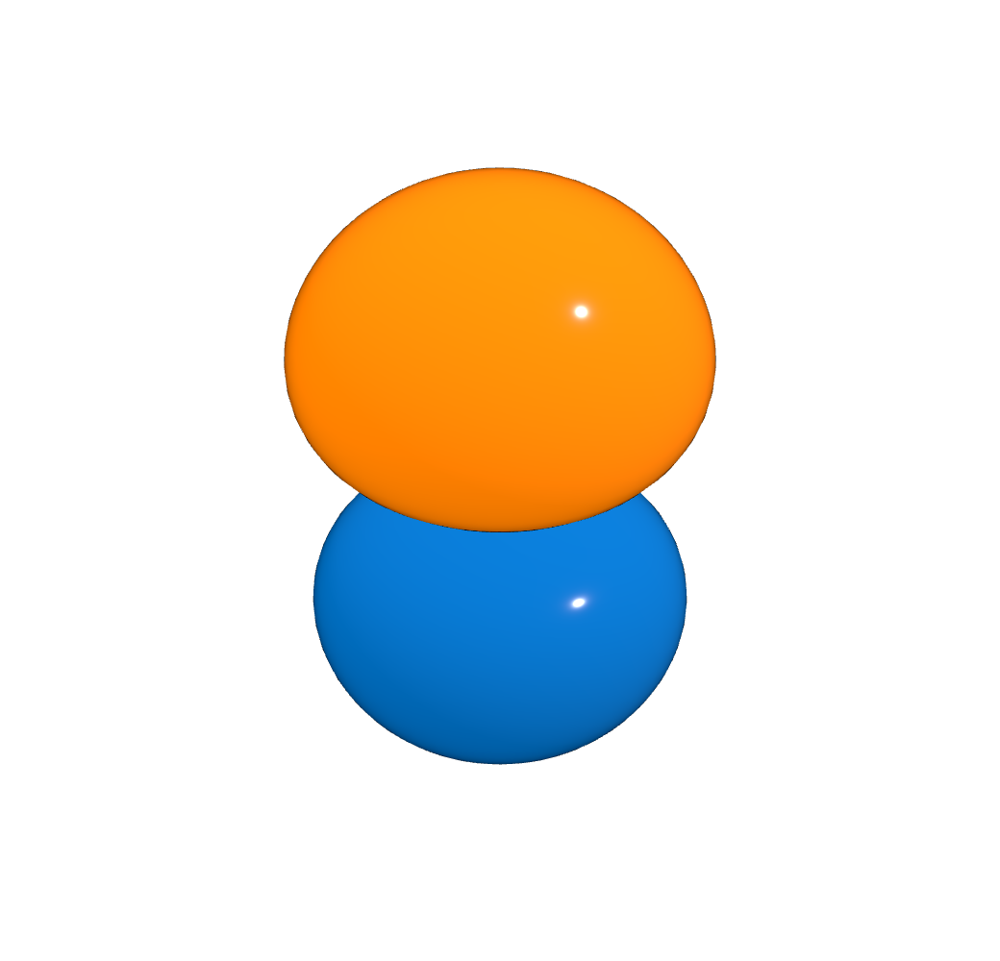
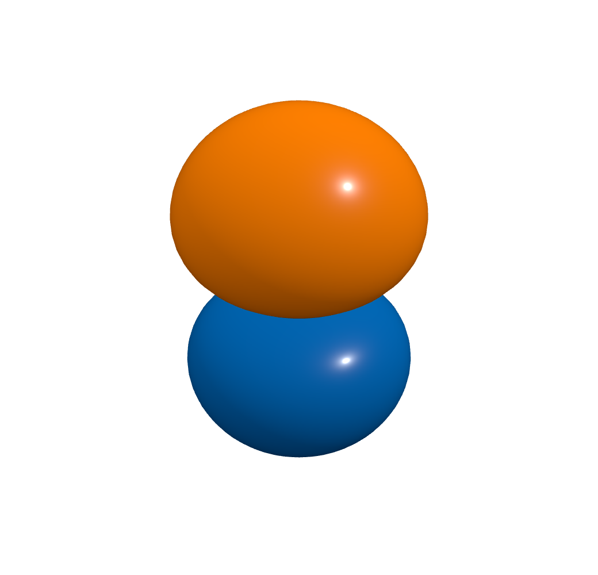
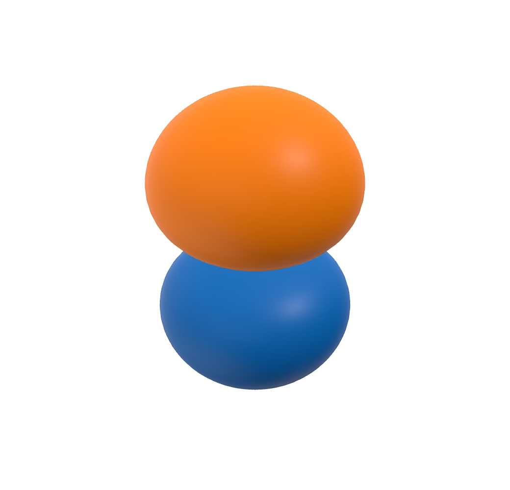

Emissive
Closest existing materialBright, nearly uniform color with a small highlight. The closest existing option for the vivid finish in the reference.
Download Emissive preset ↓BLUE & ORANGE ORBITALS
Opaque surfaces. Saturated color.
Three presets rendered in VibeMol.

Bright, nearly uniform color with a small highlight. The closest existing option for the vivid finish in the reference.
Download Emissive preset ↓
A small, bright highlight with smooth shading and a saturated color fill. No room reflections or dark contours.
Download Enamel preset ↓
A broad, gentle highlight with a softer color response. Uses the existing Satin material for a more understated figure.
Download Satin preset ↓All three images show the same analytic hydrogen 2p orbital, isovalue, and camera. These presets preserve your isovalue, Auto-iso choice, camera, visibility, and phase mapping. They select Basic shading for smooth surfaces.
The supplied image has no phase labels; orange-positive and blue-negative are the convention used here. Its orbital identity and isovalue cannot be determined from the image.